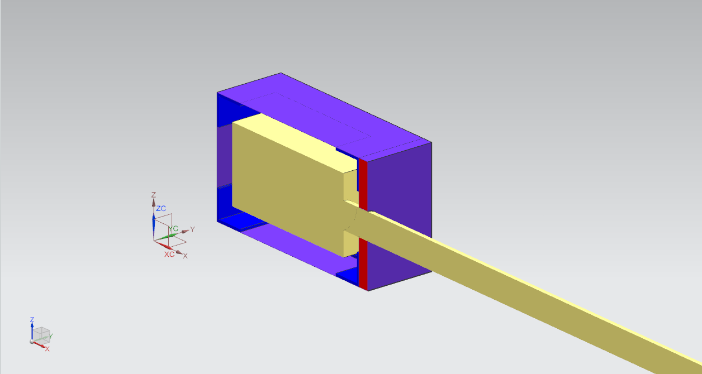

Undergraduate Research Projects
Experimental Determination of Transfer Factors in Non-Human Biota

Nuclide transport through soil medium is a key pathway of human exposure to radioactive particulate; therefore a study was conducted that employed stable isotopes. Through several experiments, two types of transfer factors were calculated for grass and cat-grass using an X-Ray Fluorescence machine. These transfer factors were for the transport of potassium acetate, lanthanum oxide, and cesium chloride. Additionally, the migration of these compounds were observed and used for the calculation of the transfer factors. One transfer factor represented the amount of analyte absorbed by a plant with respect to the amount that was initially deposited onto the soil at the beginning of the experiment. The second type of transfer factor represented the ratio of analyte within the plant with respect to the amount within the soil at any given time within the experiment’s duration. The transfer factors were found to be in general agreement with theoretical values and were within normal bounds of variation
Engineering Design for the Use of Conventional Cameras in a Radioactive Environment

This BEng thesis consisted of designing of a shielding solution for conventional CCTV cameras in a radiation environment. The design process includes testing of cameras, image degradation analysis, economic analysis, radiation source beam profiling, Monte Carlo N-Particle (MCNP) transport code modelling and shielding solution detailed design. Through the use of testing and MCNP analysis the absorbed dose for various conventional cameras is both observed and modelled to determine the expected operation of the cameras in radiation environments. Image analysis uses both qualitative and quantitative methods of analysis in order to determine the ideal configuration for camera orientation within the shielding design, as well as identifying and analyzing the degradation of images when exposed to radiation sources. As part of the testing process a beam profile has been created to determine the ideal location for irradiation of the test cameras within the beam of the gamma source used for irradiation. Detailed designs are created from the ideal shielding design candidates identified as part of the Thesis 1 design decisions. As information is analyzed design decisions were made in order to determine the best shielding design for the application of shielding conventional cameras. In addition to the design of a shielding application, economic analysis is performed to compare the shielding solution to radiation hardened cameras.